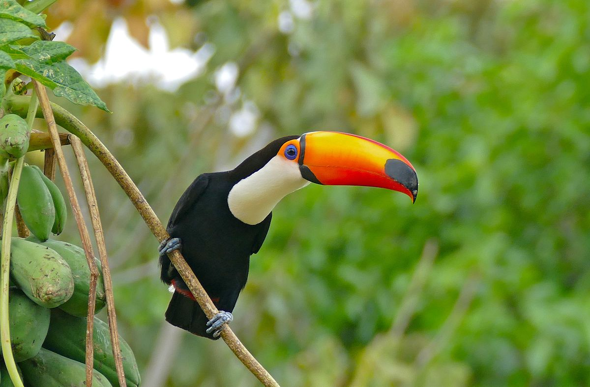
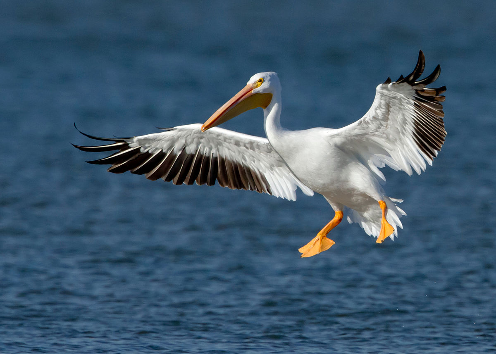

2019-10-30
Изобразяване с Katex
Това е вградена katex формула $e^x$, последвана от блок:
££\int_0^\infty e^{-x}\mathrm{d}x££
И се изобразява бързо! Но само в самата страница.

това е тукан

а това е пеликан
Надявам се, че виждате разликата!